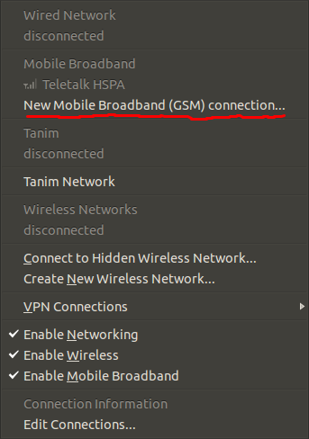
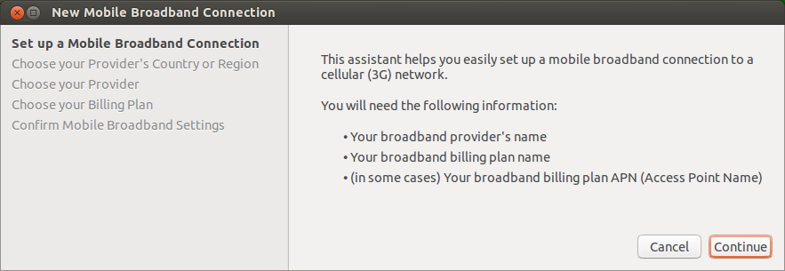
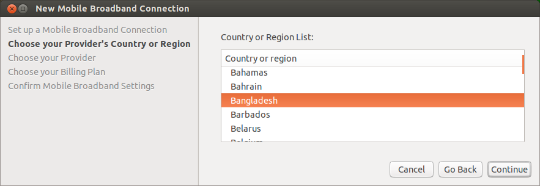
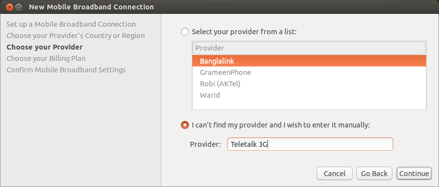
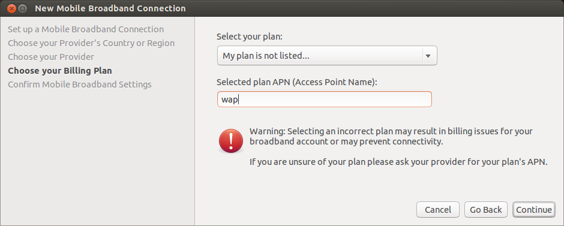
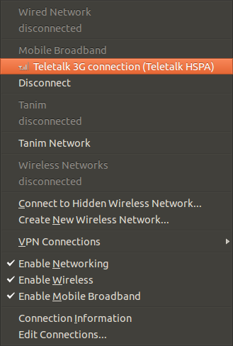

উবুন্টুতে Mobile Broadband হিসেবে মডেম ব্যাবহার
আপনি Mobile Broadband হিসেবে খুব সহজেই আপনার মডেমটিকে উবুন্টুতে কানেক্ট করতে পারেন। প্রথমেই আপনার মডেমটিকে ইউএসবি পোর্টে ঢুকান। কিছুক্ষন পর দেখবেন আপনার Network Manager অ্যাপলেটে (ডেস্কটপের একদম উপরে য়ে মেনু বার থাকে) ক্লিক করলে New Mobile Broadband Connection হিসেবে আপনার মডেমটি দেখাবে।

New Mobile Broadband(GSM) Connection এই অপশনে ক্লিক করুন। তাহলে মডেম Mobile Broadband হিসেবে কনফিগার করার উইন্ডো পাবেন। সেখানে continue ক্লিক করুন।

এবার আপনার দেশ সিলেক্ট করার অপশন আসবে। বাংলাদেশ সিলেক্ট করে continue ক্লিক করুন।

এবার আপনার ইন্টারনেট সেবাদাতা প্রতিষ্ঠান সিলেক্ট করার অপশন আসবে। আপনি I can't find my provider and I wish to enter it manually এই রেডিও বাটনে সিলেক্ট করুন। তারপর Provider ঘরে লিখুন Teletalk 3G। লিখে continue দিন।

এবার Select your plan এ My plan is not listed সিলেক্ট করুন। এবং Select plan APN(Access Point Name): এই ঘরে লিখুন wap অথবা internet তারপর continue ক্লিক করুন।

এবার কিছুক্ষন অপেক্ষা করলে দেখবেন আপনার মডেম কানেক্ট হয়ে গেছে। এবং Network Manager অ্যাপলেটে Teletalk 3G Connection নামে কানেকশনটি দেখাচ্ছে। এতে ক্লিক করে কানেক্ট করুন।

এবার প্রতিবার মডেম পোর্টে ঢুকানোর পর Network Manager অ্যাপলেটে Teletalk 3G Connection এই অপশনটি দেখতে পাবেন এবং সেখানে ক্লিক করলেই মডেম কানেক্ট হয়ে যাবে।
সতর্কীকরণঃ
টেলিটক ত্রিজি মডেমের সাথে যে ড্রাইভার সফ্টওয্যারটি দেয়া থাকে সেটি যদি আপনি ইন্সটল করে থাকেন তাহলে এ পদ্ধতি কাজ নাও করতে পারে। সেক্ষেত্রে আপনাকে সফ্টওয্যারটি আনইন্সটল করতে হবে।
অসুবিধা:
এ ক্ষেত্রে আপনার যে অসুবিধা হতে পারে তা হল কোন ম্যানেজার না থাকায় আপনি মডেমের অন্যান্য সুবিধা যেমন মেসেজ পাঠানো, মেসেজ পড়া, কল করা ইত্যাদি সুবিধা পাবেন না। তবে অন্য সফ্টওয়্যার ইন্সটল করে আপনি এ সুবিধাগুলো পেতে পারেন। যেমন: Modem Manager GUI
সুবিধা:
উপরের অসুবিধাটি ছাড়া আর অন্য সব সুবিধাই পাবেন এ পদ্ধতিতে।